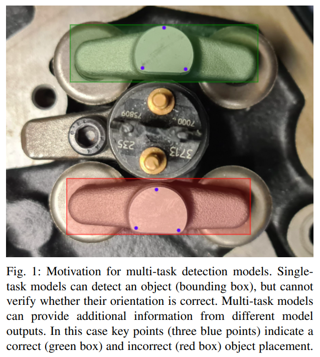
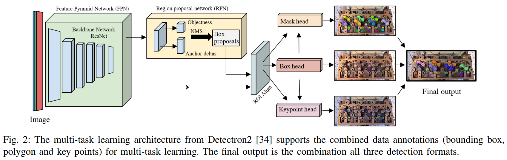
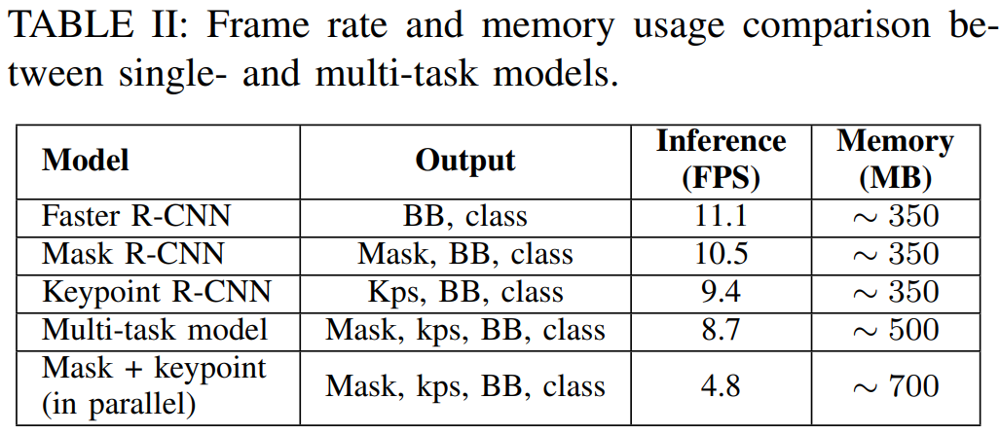

Abstract
Deep learning requires large amounts of data, and a well-defined pipeline for labeling and augmentation. Current solutions support numerous computer vision tasks with dedicated annotation types and formats, such as bounding boxes, polygons, and key points. These annotations can be combined into a single data format to benefit approaches such as multi-task models. However,
to our knowledge, no available labeling tool supports the export functionality for a combined benchmark format, and no augmentation library supports transformations for the combination of all. In this work, these functionalities are presented, with visual data annotation and augmentation to train a multi-task model (object detection, segmentation, and key point extraction). The tools are demonstrated in two robot perception use cases.
Introduction

Advancements in deep learning have helped to address
numerous problems in different domains (e.g., robotics [1],
medicine [2] and agriculture [3]). Perception in particular
has been of major focus, where single purpose models
have been optimized and fine-tuned for one specific task at
hand [4]. More recently also multi-task models have been
developed [5], [6], where a shared model concurrently learns
multiple tasks. A fundamental aspect of these models is to
increase data efficiency, reduce overfitting, and enable quick
learning due to the use of auxiliary information. They use a
unified single backbone structure having multiple descriptive
heads to address technical computer vision challenges like
boundary detection, semantic segmentation, object detection, etc. To effectively utilize multi-task models, multilabel annotations should be supported by the framework.
This implies that images and the objects inside them can
be annotated with multiple different labels (e.g., bounding
boxes, polygons and key points), to be used for learning
different tasks and thus generate multiple outputs. Compared
to single-task models this is less computationally expensive
and requires less annotated records. In addition, multiple
outputs per image or object provides additional information
compared to single-task models. Fig. 1 depicts this visually
in an object detection problem. Two objects are annotated
and correctly detected, however, in this context, the lower
object is incorrectly placed. From detection or segmentation
alone, this cannot be determined, yet with the estimated
key points as additional information (i.e., three blue points),
incorrect placement can be detected. Existing labeling and
annotation solutions [7] do not provide the combined annotation export functionality, which results in solutions that
combine several export formats to accomplish a common
task. This served as motivation for the development of a novel data pipeline to provide domain-specific annotation and
augmentation strategies. Best-of-breed libraries such as Albumentation [8] and Label Studio [9] are integrated to create
a generic data generation solution for training deep learning
models. Our developments are evaluated by applications in
object detection, object configuration estimation and depth
estimation. In this work, our contributions are:
- A novel pipeline that enables labeling of image datasets with different annotations and formats
- The augmentation of this dataset without conversion to different formats
- The validation of results in two industrial use cases with different computer vision tasks
Methodology
In this section, we present our methodology which enables
the annotation of images with multiple labels in multiple
formats and the export of these in a generic format, for
training a multi-task detection model.
The multi-task architecture of ResNet-50 FPN Keypoint
R-CNN [34] supports the combined data annotations and is
utilized for training the detection model (see Fig. 2). The
output of the model contains all three detection formats, for
object recognition, segmentation and feature extraction at the
same time

Our pipeline starts with the image annotation of polygons,
key points and bounding boxes in Label Studio. As Label
Studio does not provide the functionality for simultaneously annotating features for polygons and key points, our
approach updates polygon configurations by adding a key
points configuration script to the user interface, maintaining
a single image via the 'toName' attribute. Bounding boxes
are extracted from the polygon annotations by selecting the
outer bounds of the polygon coordinates. Following, all annotations are exported into a JSON-min format and converted
into COCO format, containing all three data annotation types
in a single output format.
Tools such as Albumentations [8] offer a wide range of
image transformations. However, it does not offer augmentation support for polygon and run-length encoding COCO
formats, limiting the support for an integrated augmentation
strategy. To enable the augmentation of multi-label annotated
data, such as bounding boxes, key points and COCO segmentation formats, the following steps are performed. First, the
combined data (in COCO format) is loaded and extracted
into separate arrays, such as bounding boxes, key points,
area, etc. Second, polygons are converted to key points
and appended to a key point array. Third, the conversion
of (x,y) key points to (x,y,v) is done to maintain COCO
standards, followed by appending invisible key points to
keep the number of labeled key points the same. Dataset
augmentation is then performed using Albumentation’s key
point transformation strategy, after which the key points
are converted back to polygons. As a result, this procedure
enables the transformation of COCO polygon format by the
Albumentation library
Results
The use cases aim to detect different objects for automation purposes. Two assembly sets are selected including a
diesel engine and a planetary gearbox, and their internal
parts (e.g., rocker arms, pushrods, bolts, gears, housing,
etc.). The diesel engine [35] and planetary gearbox [36]
datasets contain 195 and 150 RGB images, respectively,
manually annotated by drawing polygons and labeling key
points (see Fig. 3a and 3c). Augmentation is then performed
on the annotated data by different transformation strategies,
completing datasets of 280,000 and 170,000 images. Training
of the multi-task models followed typical training and evaluation steps [34] with hyper-parameters such as momentum,
weight decay, and regularization to achieve loss convergence
in about 2000 epochs. The images were captured with an
Intel Realsense D435 camera. All tools are open-source
available from the dataset documentations [35], [36].
Fig. 3b and 3d present the output of the trained multitask models on the two use cases with results for object
detection and segmentation, and key point estimations. This
demonstrates that a single multi-task model can utilize multiple data annotation formats as part of the dataset, train a
model and achieve successful detection outputs. On average,
the detection confidence is over 90 percent. Furthermore, as
main beneficial outcome Table II presents that the achieved
frame rate of the multi-task model is higher than running
multiple models in parallel. For high-resolution camera input
(1280×720), the difference is almost double, i.e., 8.7 FPS
versus 4.8 FPS, respectively. Likewise, the memory requirements for a multi-task model is less than running multiple
single-task models in parallel (i.e., 500 MB vs 700 MB).

Two further functionalities are developed to demonstrate
the use of multiple detection format outputs from the multitask model. These are object configuration and depth estimation, based on the object segmentation masks and key points,
respectively. Segmentation masks generated by the multi-task
model can be used to determine rocker arm orientations with
respect to the image, with the 2nd order moment of the mask.
The three estimated key points on the rocker arm then verify
correct configuration of the rocker arm object with respect
to the engine. The process for finding the outer side for the
correct configuration is to minimize the axis of the smallest
2nd order moment, then apply a cross-product between the
axis coordinates and predicted key points. The one key point
with an opposite sign to the others indicates the outer side.
Fig. 1 illustrates the correct orientation of the rocker arm
on the engine and verifies (in)correct placement.
To estimate the depth of the rocker arm target, with respect
to the camera, two methods were considered: by segmentation mask or by key points (see Fig. 3b). In both cases the
depth value from corresponding RGB pixel coordinates are
retrieved from a depth camera (Intel Realsense D435). For
a segmentation mask, the entire mask area as depth range
is taken and an average depth value is returned, and for a key point, a single depth value is returned. The key point
approach provides 10 times less difference in depth range
(i.e., 468 ± 5mm) as compared to the segmentation mask,
and is therefore found to be more reliable.
The proposed approach enables images to be annotated by
multiple different labels, including bounding boxes, polygons
and key points, during a single annotation step, and store the
result in a single convenient format (COCO). The annotations
are then all included in the same data augmentation process
to collect a dataset utilized as input for training a multi-task
model. In effect, this provides a single model with multiple
detection outputs in different detection formats (bounding
box, segmentation masks and key points). Compared to
single-task models that only consider single annotation format input and detection output, the following benefits are
identified. 1. Time-saving for image annotation and augmentation. All annotations can be done in a single image,
without changing any formats for different annotation types.
For example, in case of a single task-model, one image would
need to be annotated three times separately for three different
annotation types. 2. Memory space requirements saving in
model training. As only a single multi-task model needs to
be trained instead of multiple single-task models, size of the
model is reduced. 3. Combining detection outputs. Detection modalities from the multi-task model can be combined to
solve additional detection tasks, not directly provided by the
model. For example, depth and object configuration from key
points as shown by our use cases, or other post-prediction
applications such as boundary or grasp pose detection, or the
estimation of object properties.
A current limitation of the annotation pipeline is that it
relies on existing annotation (Label Studio [9]) and augmentation (Albumentations [8]) tools. While these tools can be
used under an open source license, access and support might
change over time. Another limitation is that, still, annotation
is a time-consuming step in the process of generating a
learning-based detection model. Selection of which data to
annotate and in which format (e.g., depth from pixel masks
or key points) requires manual decisions and an iterative
process to select a best outcome for the tasks. Automated
and interactive annotation (e.g., based on machine learning
[23], [37]) and semi-automated, interactive image annotation
for visual detection exist [38], but are still in early stages of
research. This is a natural next-step in developing assistive
tools for model training and planned as future work.
References
[1] A. I. Karoly ´ et al., “Deep learning in robotics: Survey on model
structures and training strategies,” IEEE Transactions on Systems,
Man, and Cybernetics: Systems, vol. 51, no. 1, pp. 266–279, 2021.
[2] F. Piccialli et al., “A survey on deep learning in medicine: Why, how
and when?,” Information Fusion, vol. 66, pp. 111–137, 2021.
[3] A. Kamilaris and F. X. Prenafeta-Boldu, “Deep learning in agriculture: ´
A survey,” Computers and electronics in agriculture, vol. 147, pp. 70–
90, 2018.
[4] A. Krizhevsky, I. Sutskever, and G. E. Hinton, “Imagenet classification
with deep convolutional neural networks,” Communications of the
ACM, vol. 60, no. 6, pp. 84–90, 2017.
[5] R. Caruana, “Multitask learning,” Machine Learning, vol. 28, pp. 41–
75, 1997.
[6] S. Vandenhende et al., “Multi-task learning for dense prediction
tasks: A survey,” IEEE Transactions on Pattern Analysis and Machine
Intelligence, vol. 44, no. 7, pp. 3614–3633, 2022.
[7] B. Pande et al., “A review of image annotation tools for object detection,” in International Conference on Applied Artificial Intelligence
and Computing, pp. 976–982, 2022.
[8] Albumentations. https://albumentations.ai/, 2023.
[9] Label Studio. https://labelstud.io/, 2023.
[10] T.-Y. Lin et al., “Microsoft COCO: Common objects in context,” in
European Conf. on Computer Vision (ECCV), pp. 740–755, 2014.
[11] C.-Y. Wang et al., “Yolov7: Trainable bag-of-freebies sets new
state-of-the-art for real-time object detectors,” arXiv preprint
arXiv:2207.02696, 2022.
[12] M. Everingham, L. V. Gool, C. K. Williams, J. Winn, and A. Zisserman, “The Pascal Visual Object Classes (VOC) challenge,” International Journal of Computer Vision, vol. 88, pp. 303–338, 6 2010.
[13] V7Labs. https://www.v7labs.com/, 2023.
[14] CVAT. https://www.cvat.ai/, 2023.
[15] P. Voigtlaender et al., “MOTS: Multi-object tracking and segmentation,” in IEEE Conference on Computer Vision and Pattern Recognition (CVPR), 2019.
[16] Labelbox. https://labelbox.com, 2023.
[17] LabelMe. http://labelme.csail.mit.edu, 2023.
[18] I. Misra, A. Shrivastava, A. Gupta, and M. Hebert, “Cross-stitch
networks for multi-task learning,” in IEEE Conference on Computer
Vision and Pattern Recognition (CVPR), pp. 3994–4003, 2016.
[19] I. Kokkinos, “UberNet: Training a universal convolutional neural
network for low-, mid-, and high-level vision using diverse datasets
and limited memory,” in IEEE Conference on Computer Vision and
Pattern Recognition (CVPR), pp. 6129–6138, 2017.
[20] C. Fifty, E. Amid, Z. Zhao, T. Yu, R. Anil, and C. Finn, “Efficiently
identifying task groupings for multi-task learning,” Advances in Neural
Information Processing Systems, vol. 34, pp. 27503–27516, 2021.
[21] Z. Meng, X. Yao, and L. Sun, “Multi-task distillation: Towards mitigating the negative transfer in multi-task learning,” in IEEE International
Conference on Image Processing (ICIP), pp. 389–393, 2021.
[22] C.-Y. Wang, I.-H. Yeh, and H.-Y. M. Liao, “You Only Learn One
Representation: Unified network for multiple tasks,” arXiv preprint
arXiv:2105.04206, 2021.
[23] P. Bhagat and P. Choudhary, “Image annotation: Then and now,” Image
and Vision Computing, vol. 80, pp. 1–23, 2018.
[24] C. Sager, C. Janiesch, and P. Zschech, “A survey of image labelling for
computer vision applications,” Journal of Business Analytics, vol. 4,
no. 2, pp. 91–110, 2021.
[25] M. Abadi et al., “TensorFlow: Large-scale machine learning on
heterogeneous systems,” 2015. Software available from tensorflow.org.
[26] A. Paszke et al., “PyTorch: An imperative style, high-performance
deep learning library,” Advances in neural information processing
systems, vol. 32, 2019.
[27] G. Bradski, “The OpenCV Library,” Dr. Dobb’s Journal of Software
Tools, 2000.
[28] J. Lemley, S. Bazrafkan, and P. Corcoran, “Smart augmentation
learning an optimal data augmentation strategy,” IEEE Access, vol. 5,
pp. 5858–5869, 2017.
[29] Z. Zou et al., “Object detection in 20 years: A survey,” Proceedings
of the IEEE, vol. 111, no. 3, pp. 257–276, 2023.
[30] C. Harris, M. Stephens, et al., “A combined corner and edge detector,”
in Alvey vision conference, vol. 15, pp. 10–5244, 1988.
[31] X. Ding et al., “Local keypoint-based Faster R-CNN,” Applied Intelligence, vol. 50, pp. 3007–3022, 10 2020.
[32] C.-C. Wong et al., “Manipulation planning for object re-orientation
based on semantic segmentation keypoint detection,” Sensors, vol. 21,
no. 7, p. 2280, 2021.
[33] L. Manuelli, W. Gao, P. Florence, and R. Tedrake, “kPAM: KeyPoint
Affordances for Category-Level Robotic Manipulation,” in The International Symposium of Robotics Research, pp. 132–157, 2019.
[34] Detectron2. https://github.com/facebookresearch/
detectron2, 2023.
[35] G. Sharma, R. Pieters, and A. Angleraud, “Engine assembly
dataset.” http://dx.doi.org/10.5281/zenodo.7669593,
Feb. 2023.
[36] G. Sharma and R. Pieters, “Planetary gear dataset.” http://dx.
doi.org/10.5281/zenodo.8223473, Aug. 2023.
[37] Q. Cheng et al., “A survey and analysis on automatic image annotation,” Pattern Recognition, vol. 79, pp. 242–259, 2018.
[38] J. Bragantini, A. X. Falcao, and L. Najman, “Rethinking interactive ˜
image segmentation: Feature space annotation,” Pattern Recognition,
vol. 131, p. 108882, 2022.